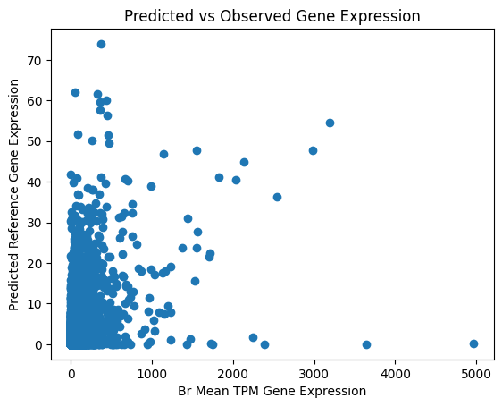

In the previous test, we added an option to read in unphased VCFs as if they were phased. It correctly ran Enformer on both “haplotypes”, but to reduce number of runs, we implemented predictions on the mean haplotype for unphased VCFs. Now we check that the pipeline method returns the same results as original Enformer usage

We calculate correlation for two comparisons: (1) Enformer predictions on rn7 reference genome against average gene expression in the Brain study and (2) Enformer predictions for a small sample of rats against their individual gene expression.
ENSRNOG00000054549
Although we have picked genes with many linked variants, we are seeing no population variation in Enformer outputs. We’ll take a closer look at the genetic variation around the TSS.
We are looking for genes with (1) variation in observed gene expression across individuals, (2) high prediction performance in elastic net training, and (3) multiple causal variants.
Our pipeline inputs to run Enformer on the reference genome and sampled rat genotypes
We pick up where we left off last time with predicting epigenome across all genes, trying to run the Enformer pipeline on intervals we missed the first time because of batching issues. Additionally, we’ll try using the added mouse head parameter
We checked whether our genes have peaks at the TSS and then compared the variation of CAGE predictions from the two different methods of centering intervals.
Earlier we plotted predicts vs observed expression, but they did not show any association. Here, we investigate the CAGE predictions further
In this run, we centered enformer predictions around start and end for each gene. The plots show no association, but we will continue to use this template for plotting CAGE expression as we refine our approach to choosing genes for examination.
We picked two regions and ran enformer on reference genome and personalized genome for one individual
We use all intervals along chromosomes 8 through 11
A couple snippets on the Polaris computing system
This week we learned the basics of VS Code, Python, and NumPy.
We’ll review key points from each section of Large Language Models in Molecular Biology